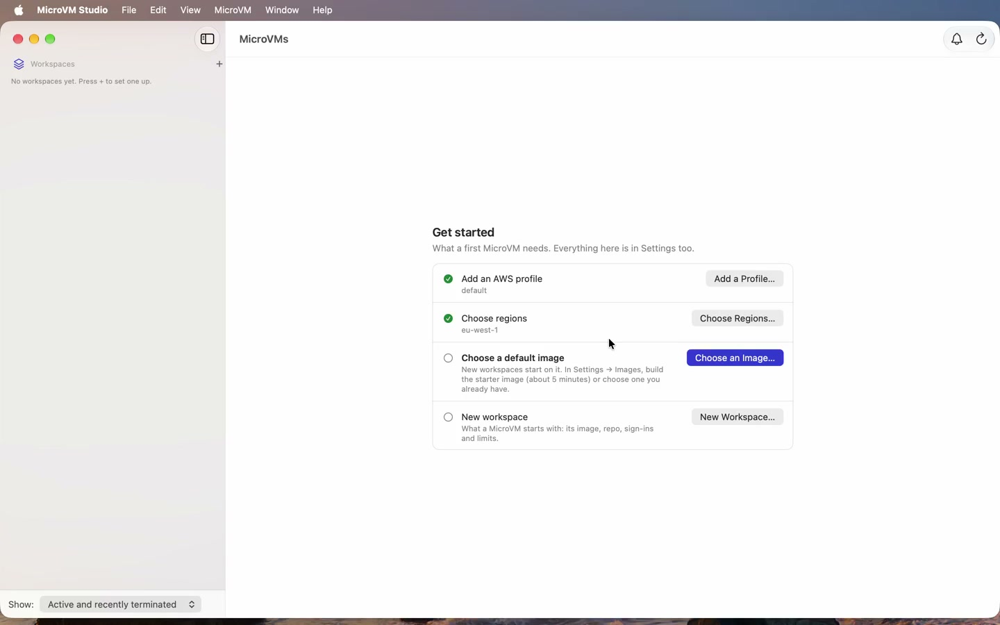
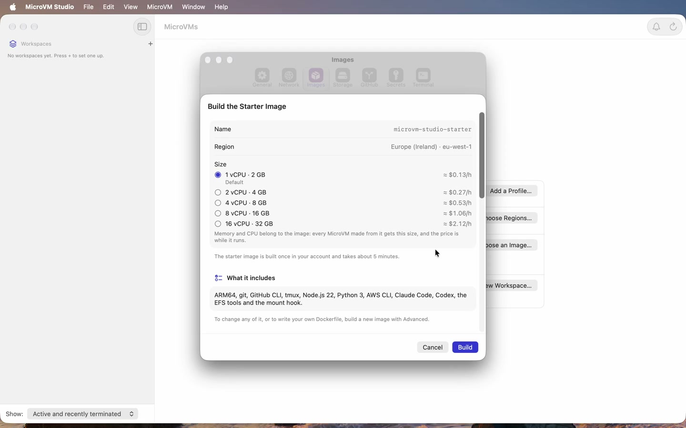
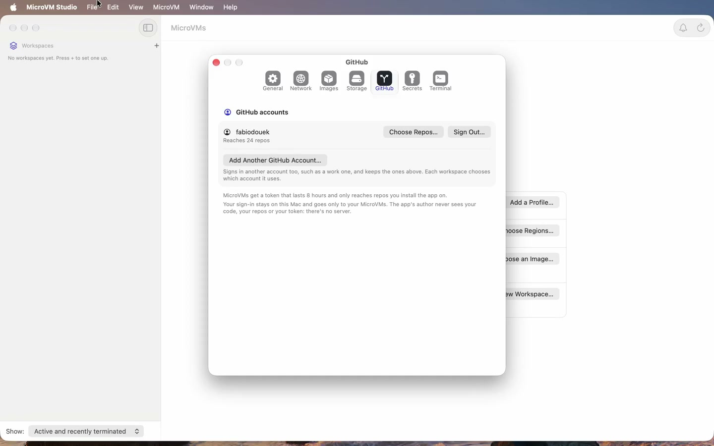
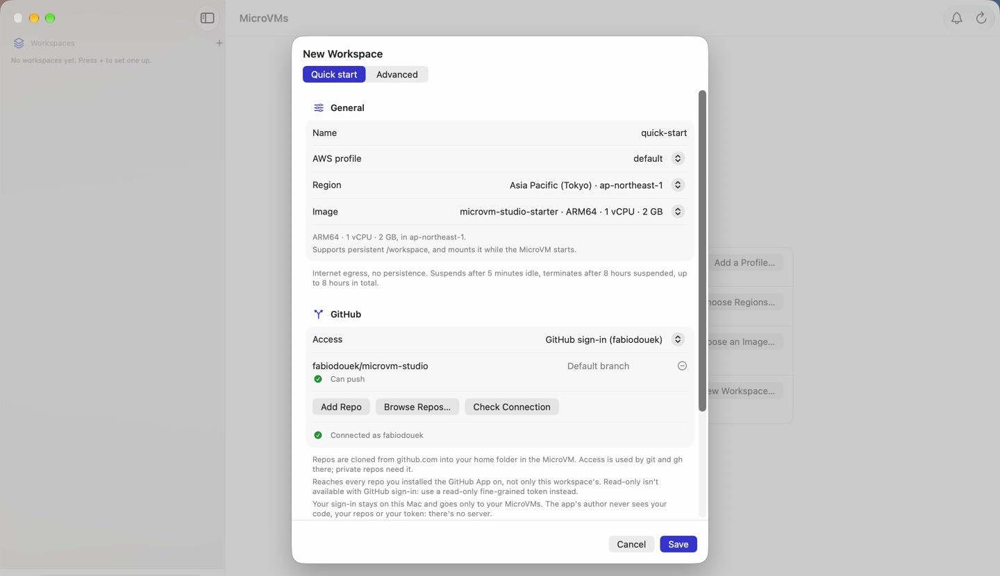
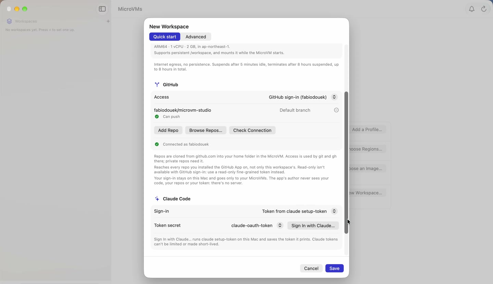
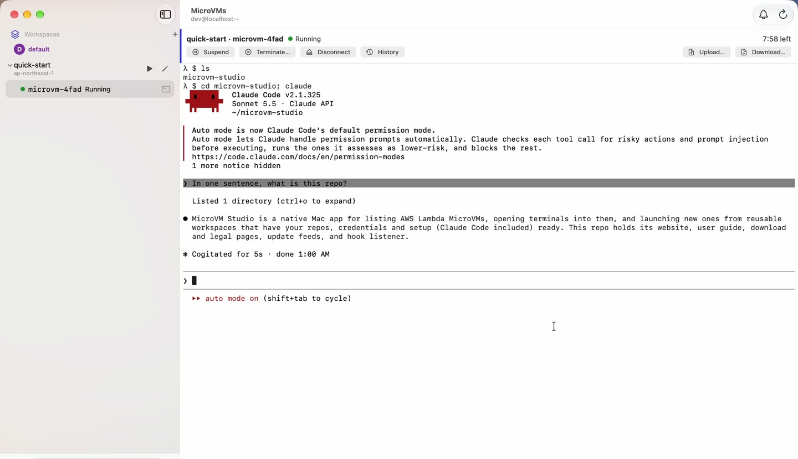
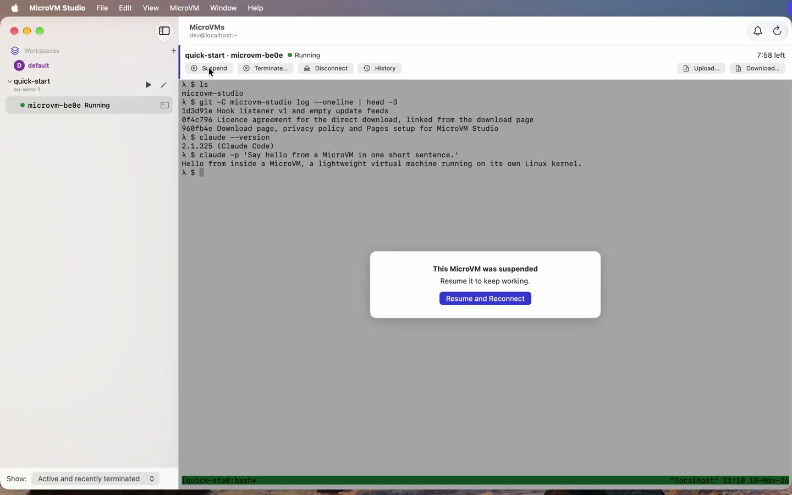

Quick start
From a new install to a running MicroVM with your repo cloned and Claude Code signed in. About ten minutes, five of them waiting for the starter image to build.
Before you start
- An AWS profile in
~/.aws/configor~/.aws/credentials, in a region with Lambda MicroVMs. - A GitHub account, and a Claude subscription or an Anthropic API key, if you want those in the MicroVM.
Steps
Open the app
The main window shows Get started: a short checklist. Your profile and its region are ticked already. Each line's button opens the place that does it.

Build the starter image
Press Choose an Image…, then Build Starter Image… and Build. MicroVMs run from an image built in your own account; the starter has git, the GitHub CLI, tmux, Node.js, Python, the AWS CLI, Claude Code and Codex. The build takes about five minutes and you can close the sheet meanwhile. When it finishes it becomes the default image for new workspaces.

Sign in to GitHub
In Settings → GitHub, press Sign In to GitHub…. The app shows a one-time code; Copy Code and Open GitHub takes you to GitHub, where you paste it and choose which repos the app may reach. MicroVMs get a token that lasts 8 hours and reaches only those repos.

Make a workspace
Back in the main window, press New Workspace… and give it a name. A workspace is what every MicroVM you launch from it starts with. Quick start keeps it to a few fields: the image, the repos and the sign-ins. Press Add Repo, type
owner/repo, and Check Connection to confirm the access.
Sign Claude Code in
Under Claude Code, choose Token from claude setup-token and press Sign In with Claude…. Approve in the browser; the token is saved in your Mac's Keychain and sent only to MicroVMs of workspaces that use it. An Anthropic API key and Amazon Bedrock are the other choices.

Save and launch
Press Save, then Launch. The MicroVM starts in a few seconds; the app then copies credentials and clones the repo, and the terminal opens. Run
claudeto start working.
Suspend, resume, terminate
Suspend pauses the MicroVM and its billing; it also suspends by itself after 5 minutes with no terminal connected. Resume and Reconnect brings it back with the session as you left it. Terminate… stops it for good: anything you didn't push is lost, so the app asks first. The workspace stays for the next launch.

Next
To keep files between MicroVMs, see A workspace that keeps its files. For everything a workspace can hold, see Workspaces.